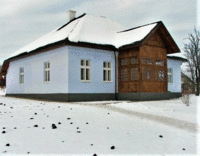
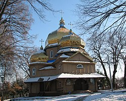

Родина
Народився 1 січня 1909 року в селі Старий Угринів, нині Калуського району Івано-Франківської області, Україна (тоді Калуський повіт, Королівство Галичини та Володимирії, Австро-Угорщина).
Батько: о. Андрій Бандера, (11.12.1882—10.07.1941) греко-католицький священник, був у той час парохом у селі Старому Угринові. Походив із міста Стрия.
Мати: Мирослава Бандера, (1890—1921) походила з давньої священницької родини Глодзінських (була донькою греко-католицького священника із села Старого Угринова).
Дідусь: Володимир Ґлодзінський, (1836—1931) священник Української Греко-католицької церкви, дід Степана по материнській лінії.
Брати: Олександр (25.03.1911—кінець липня 1942), Василь (12.02.1915—21.07.1942), Богдан (04.04.1919—?).
Сестри: Марта-Марія (22.06.1907—13.11.1982), Володимира (10.03.1913—11.07.2001), Оксана (22.12.1917—24.12.2008).
Дружина: Ярослава Бандера, (14.09.1917 — 17.08.1977) походила з родини Опарівських, українська політична діячка.
Діти: Наталя (26.05.1941—13.01.1985), Андрій (16.05.1946 — 19.07.1984)[25], Леся (27.08.1947—16.08.2011)[26][27].
Внучки: Богдана, Олена[28].
Онук: Степан Андрійович Бандера (1969), народився у Вінніпезі (Канада), має диплом Колумбійського університету. Нині працює журналістом, як і його батько, який видавав у Канаді англомовну газету Ukrainian Echo[29].
Збереглася докладна автобіографія Степана Бандери[30].
Батько: о. Андрій Бандера, (11.12.1882—10.07.1941) греко-католицький священник, був у той час парохом у селі Старому Угринові. Походив із міста Стрия.
Мати: Мирослава Бандера, (1890—1921) походила з давньої священницької родини Глодзінських (була донькою греко-католицького священника із села Старого Угринова).
Дідусь: Володимир Ґлодзінський, (1836—1931) священник Української Греко-католицької церкви, дід Степана по материнській лінії.
Брати: Олександр (25.03.1911—кінець липня 1942), Василь (12.02.1915—21.07.1942), Богдан (04.04.1919—?).
Сестри: Марта-Марія (22.06.1907—13.11.1982), Володимира (10.03.1913—11.07.2001), Оксана (22.12.1917—24.12.2008).
Дружина: Ярослава Бандера, (14.09.1917 — 17.08.1977) походила з родини Опарівських, українська політична діячка.
Діти: Наталя (26.05.1941—13.01.1985), Андрій (16.05.1946 — 19.07.1984)[25], Леся (27.08.1947—16.08.2011)[26][27].
Внучки: Богдана, Олена[28].
Онук: Степан Андрійович Бандера (1969), народився у Вінніпезі (Канада), має диплом Колумбійського університету. Нині працює журналістом, як і його батько, який видавав у Канаді англомовну газету Ukrainian Echo[29].
Збереглася докладна автобіографія Степана Бандери[30].
Дитячі роки (1909-1927)


Фронти Першої світової війни 4 рази в 1914–1915 і 1917 пересувалися через його рідне село. Улітку 1917 року жителі Галичини стали свідками проявів національно-революційних зрушень і революції в армії царської Росії. У власній автобіографії Степан Бандера згадує також про «велику різницю між українськими та московськими військовими частинами».
З дитинства С. Бандера був свідком відродження й розбудови Української держави. З листопада 1918 його батько був послом до парламенту Західноукраїнської Народної Республіки — Української Національної Ради — в Станиславові й брав активну участь у формуванні державного життя Калущини.
У травні 1919 року під час наступу польських військ Степан (разом з усією родиною військового капелана УГА Андрія Бандери) був евакуйований до подільського містечка Ягільниці, де родина перебувала до вересня (батько в липні відступив разом з Галицькою Армією за Збруч[33]. Дорогою до Ягільниці кілька днів родина о. Андрія проживала в домі родини Гафтковичів у м. Бучачі[34].
У вересні або жовтні 1919 року Степан Бандера вступив до української гімназії у Стрию, де вчився до 1927 року. У третьому класі (від 1922 р.) він став учасником Пласту; у Стрию був у 5-му пластовому курені імені князя Ярослава Осмомисла, а по закінченню гімназії — у 2-му курені старших пластунів «Загін Червона Калина». Навесні 1922 р. від туберкульозу горла померла його мати.
Юність(1927-1934)

У середині 1927 року Бандера успішно склав випускні іспити (матуру) в гімназії й вирішив вступити до Української господарської академії в Подєбрадах (<Чехословаччина), проте польська влада відмовила в наданні молодій людині закордонного паспорта, тому він був змушений на рік залишитися в Старому Угринові. У 1927–1928 роках Степан Бандера переймався культурно-освітньою та господарською діяльністю в рідному селі (працював у читальні «Просвіти», провадив театрально-аматорський гурток і хор, заснував руханкове товариство «Луг» і належав до засновників кооперативів). При цьому керував організаційно-вишкільною роботою по лінії підпільної УВО в довколишніх селах.
У вересні 1928 року він переїхав до Львова й там записався на агрономічний відділ Високої Політехнічної Школи, де вчився до 1933 року. Перед дипломним іспитом через політичну діяльність його арештували й ув'язнили.
У студентські роки брав активну участь в організованому українському національному житті. Був членом українського товариства студентів політехніки «Основа» та членом управи Кружка студентів-рільників. Деякий час працював у бюро товариства Сільський Господар, що займався розвитком агрокультури на західних українських землях. З товариством «Просвіта» їздив у неділі та свята у поїздки в довколишні села Львівщини з доповідями та на допомогу в організації інших подій. У ділянці молодіжних і спортивно-руханкових організацій був активним передусім у Пласті, як член 2-го куреня старших пластунів «Загін Червона Калина», в Українському Студентському Спортовому Клубі (УССК), а деякий час теж у товариствах «Сокіл-Батько» й «Луг» у Львові. Займався бігом, плаванням, лещетарством, мандрівництвом. У вільний час залюбки грав у шахи, крім того, співав у хорі та грав на гітарі й мандоліні. Не палив і не вживав алкогольних напоїв.
У 1932–1933 рр. виконував функцію заступника крайового провідника, а в середині 1933 р. був призначений крайовим провідником ОУН і крайовим комендантом УВО на ЗУЗ. У липні 1932 р. Бандера з кількома іншими делегатами від КЕ ОУН на ЗУЗ брав участь у Конференції ОУН у Празі (так звана Віденська Конференція, яка була найважливішим збором ОУН після установчого конгресу). У 1933 р. брав участь у конференціях у Берліні й Гданську.
Під керівництвом Бандери, ОУН відходить від експропріаційних акцій і починає серію каральних акцій проти представників польської окупаційної влади. У цей період оунівці здійснили три політичні вбивства, що отримали значний розголос: убивство шкільного куратора Гадомського, звинувачуваного в нищенні поляками українського шкільництва та полонізації; убивство Олексія Майлова, секретаря консульства СРСР у Львові, який був одночасно агентом ГПУ при НКВС — як протест проти Голодомору в Україні; та вбивство Броніслава Перацького, міністра внутрішніх справ Польщі, за керівництва якого польська влада провела криваві акції «пацифікації» (умиротворення) українців. Степан Бандера здійснював загальне керівництво замахами на Майлова[35] та Перацького[36].